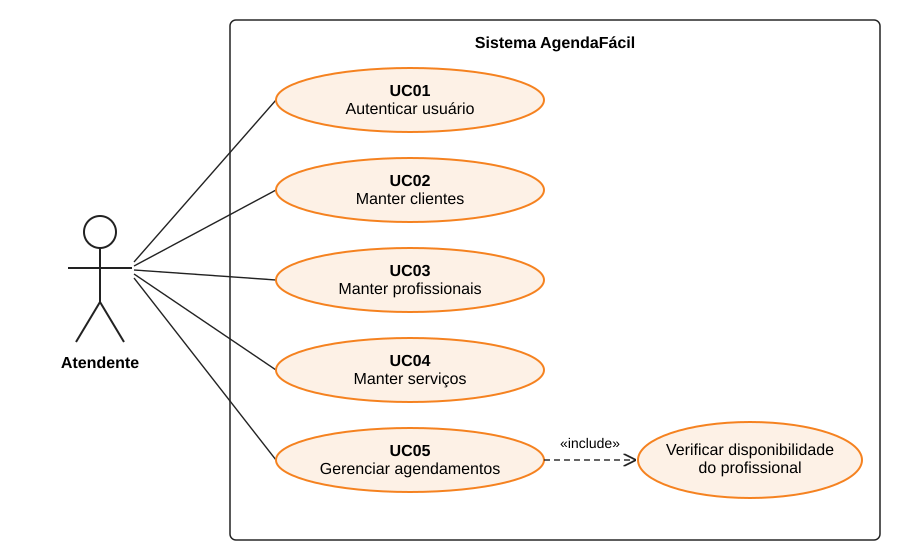
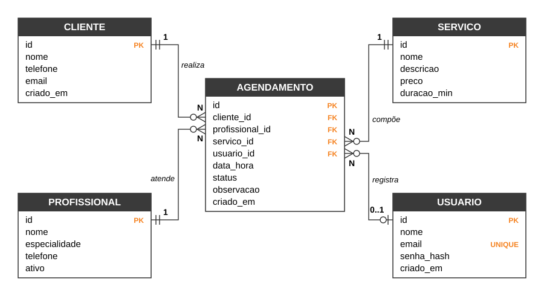
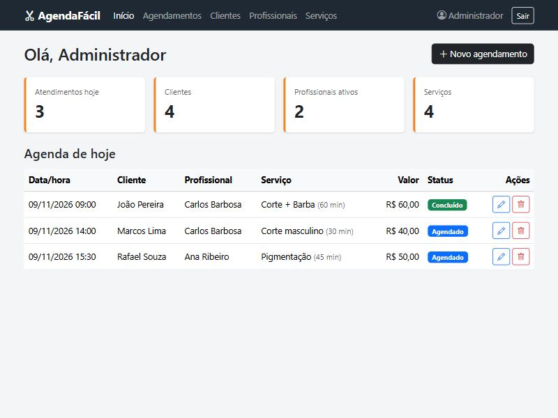
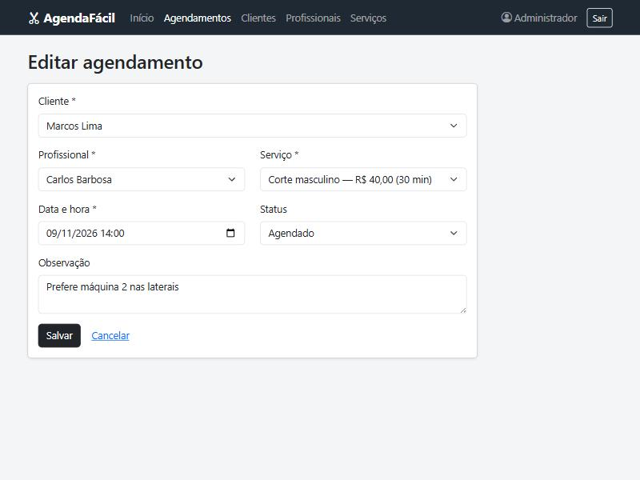

Barbearias de pequeno porte costumam controlar os horários dos clientes em cadernos, planilhas ou conversas de aplicativos de mensagem. Esse controle manual funciona enquanto o movimento é pequeno, mas logo surgem problemas: dois clientes marcados no mesmo horário com o mesmo profissional, dificuldade para saber quem será atendido no dia e falta de um cadastro organizado de clientes e serviços.
Para resolver esse problema, este trabalho apresenta o AgendaFácil, um sistema web de agendamento para barbearias. O sistema permite que o atendente cadastre clientes, profissionais e serviços e, a partir deles, marque atendimentos em uma agenda. Ao criar ou alterar um agendamento, o sistema verifica se o profissional já está ocupado naquele horário, considerando a duração do serviço, e impede o conflito. A página inicial mostra os atendimentos do dia e os totais cadastrados.
O sistema implementa as quatro operações básicas de persistência, conhecidas como CRUD (Create, Read, Update, Delete), sobre as entidades cliente, profissional, serviço e agendamento, todas armazenadas em um banco de dados relacional.
A stack foi escolhida pela simplicidade de instalação e pela clareza do código:
sqlite3 da biblioteca padrão do Python (SQLITE, 2026);O documento está organizado da seguinte forma: o capítulo 2 apresenta o desenvolvimento, com os requisitos, os diagramas de casos de uso e entidade-relacionamento, a implementação e os testes; o capítulo 3 traz a conclusão e, por fim, são listadas as referências utilizadas.
Este capítulo descreve como o sistema foi especificado e construído. Os requisitos foram levantados a partir da rotina de atendimento de uma barbearia e serviram de base para os diagramas e para a implementação, seguindo a ideia de que a especificação orienta a construção do software (SOMMERVILLE, 2011).
O AgendaFácil é uma aplicação web que segue o padrão cliente-servidor. O navegador do usuário envia
requisições ao servidor Flask, que consulta ou altera o banco SQLite e devolve páginas HTML geradas pelos
templates Jinja2. A organização se aproxima do padrão MVC (Model-View-Controller): o banco de dados e o
arquivo schema.sql representam o modelo, os templates representam a visão e as funções de rota em
app.py fazem o papel de controlador. O Quadro 1 mostra a estrutura de pastas do projeto.
Quadro 1 – Estrutura de pastas do projeto
| Arquivo / pasta | Conteúdo |
|---|---|
app.py | Aplicação Flask: rotas de login e dos CRUDs, regras de negócio e filtros de formatação. |
db.py | Conexão com o SQLite, criação das tabelas e carga de dados de exemplo. |
schema.sql | Comandos CREATE TABLE com chaves primárias, estrangeiras e restrições. |
templates/ | Páginas HTML (Jinja2): login, início e listas/formulários de cada entidade. |
static/estilo.css | Ajustes visuais sobre o Bootstrap. |
tests/test_app.py | Testes automatizados com unittest. |
docs/ | Esta documentação e os diagramas. |
instance/agendafacil.db | Arquivo do banco de dados, criado automaticamente na primeira execução. |
Fonte: elaborado pelo autor (2026).
Requisitos funcionais descrevem o que o sistema deve fazer, ou seja, os serviços que ele oferece ao usuário (SOMMERVILLE, 2011). O Quadro 2 lista os requisitos funcionais do AgendaFácil.
Quadro 2 – Requisitos funcionais
| Código | Descrição |
|---|---|
| RF01 | O sistema deve permitir o cadastro de usuários com nome, e-mail e senha. |
| RF02 | O sistema deve autenticar o usuário por e-mail e senha e permitir encerrar a sessão (logout). |
| RF03 | O sistema deve permitir incluir, consultar, alterar e excluir clientes. |
| RF04 | O sistema deve permitir buscar clientes por nome ou telefone. |
| RF05 | O sistema deve permitir incluir, consultar, alterar e excluir profissionais, indicando se estão ativos. |
| RF06 | O sistema deve permitir incluir, consultar, alterar e excluir serviços, com preço e duração em minutos. |
| RF07 | O sistema deve permitir incluir, consultar, alterar e excluir agendamentos, vinculando cliente, profissional e serviço a uma data e hora. |
| RF08 | O sistema deve permitir alterar o status do agendamento para agendado, concluído ou cancelado. |
| RF09 | O sistema deve permitir filtrar os agendamentos por data e por status. |
| RF10 | O sistema deve exibir, na página inicial, os totais cadastrados e a agenda do dia. |
| RF11 | O sistema deve registrar qual usuário criou cada agendamento. |
Fonte: elaborado pelo autor (2026).
Requisitos não funcionais definem restrições e qualidades do sistema, como segurança, usabilidade e tecnologia adotada (PRESSMAN; MAXIM, 2016). Eles estão no Quadro 3.
Quadro 3 – Requisitos não funcionais
| Código | Categoria | Descrição |
|---|---|---|
| RNF01 | Implementação | O sistema deve ser desenvolvido em Python 3.12 com o framework Flask 3.1. |
| RNF02 | Implementação | Os dados devem ser armazenados em banco relacional SQLite, com chaves estrangeiras ativas. |
| RNF03 | Segurança | As senhas devem ser armazenadas somente como hash, nunca em texto puro. |
| RNF04 | Segurança | Todas as páginas, exceto login e cadastro de usuário, devem exigir sessão autenticada. |
| RNF05 | Segurança | As consultas SQL devem ser parametrizadas, para evitar injeção de SQL. |
| RNF06 | Usabilidade | A interface deve ser responsiva, podendo ser usada no computador e no celular. |
| RNF07 | Usabilidade | A interface deve estar em português do Brasil, com datas em dd/mm/aaaa e valores em reais (R$). |
| RNF08 | Portabilidade | O sistema deve executar localmente sem servidor de banco de dados, exigindo apenas o Python e o Flask. |
| RNF09 | Manutenibilidade | O código-fonte deve ser versionado com Git e hospedado no GitHub. |
Fonte: elaborado pelo autor (2026).
Além dos requisitos, algumas regras de negócio controlam o comportamento do sistema e são verificadas no servidor ou pelo próprio banco de dados (Quadro 4).
Quadro 4 – Regras de negócio
| Código | Descrição |
|---|---|
| RN01 | Um profissional não pode ter dois agendamentos que se sobreponham no tempo. A sobreposição considera a duração do serviço, e agendamentos cancelados não ocupam horário. |
| RN02 | Não é permitido criar um agendamento com data e hora que já passaram. |
| RN03 | Clientes, profissionais e serviços que possuem agendamentos vinculados não podem ser excluídos. |
| RN04 | Somente profissionais ativos aparecem como opção ao criar ou editar um agendamento. |
| RN05 | O e-mail do usuário é único, e a senha deve ter pelo menos 6 caracteres. |
Fonte: elaborado pelo autor (2026).
O diagrama de casos de uso da UML mostra as funcionalidades do sistema do ponto de vista de quem o utiliza (BOOCH; RUMBAUGH; JACOBSON, 2012). No AgendaFácil há um único ator, o atendente da barbearia, que interage com cinco casos de uso, apresentados na Figura 1. O caso de uso UC05 inclui obrigatoriamente a verificação de disponibilidade do profissional, que aplica a regra RN01.
Figura 1 – Diagrama de casos de uso

Fonte: elaborado pelo autor (2026).
O Quadro 5 resume cada caso de uso e os requisitos que ele atende.
Quadro 5 – Descrição resumida dos casos de uso
| Código | Caso de uso | Descrição | Requisitos |
|---|---|---|---|
| UC01 | Autenticar usuário | O atendente informa e-mail e senha para entrar no sistema. Também pode criar uma conta e encerrar a sessão. | RF01, RF02 |
| UC02 | Manter clientes | Incluir, consultar com busca, alterar e excluir clientes. | RF03, RF04 |
| UC03 | Manter profissionais | Incluir, consultar, alterar (inclusive ativar ou inativar) e excluir profissionais. | RF05 |
| UC04 | Manter serviços | Incluir, consultar, alterar e excluir serviços com preço e duração. | RF06 |
| UC05 | Gerenciar agendamentos | Criar, consultar com filtros, alterar dados e status e excluir agendamentos; consultar a agenda do dia. | RF07 a RF11 |
Fonte: elaborado pelo autor (2026).
Por ser o caso de uso central do sistema, o UC05 é detalhado no Quadro 6.
Quadro 6 – Especificação do caso de uso UC05 – Gerenciar agendamentos
| Ator | Atendente |
| Pré-condição | O atendente está autenticado (UC01) e existem cliente, profissional ativo e serviço cadastrados. |
| Fluxo principal | 1. O atendente acessa “Novo agendamento”. 2. O sistema exibe o formulário com as listas de clientes, profissionais ativos e serviços. 3. O atendente seleciona cliente, profissional e serviço, informa data e hora e, se quiser, uma observação. 4. O sistema verifica se a data não está no passado (RN02). 5. O sistema verifica a disponibilidade do profissional, considerando a duração do serviço (RN01). 6. O sistema grava o agendamento com status “agendado” e o usuário que o criou, e exibe a lista de agendamentos. |
| Fluxos alternativos | A1 – Data no passado: no passo 4, o sistema exibe a mensagem de erro e mantém o formulário. A2 – Horário ocupado: no passo 5, o sistema informa que o profissional já tem atendimento no horário. A3 – Editar: o atendente escolhe um agendamento, altera os dados ou o status e salva; os passos 5 e 6 se repetem. A4 – Excluir: o atendente confirma a exclusão e o registro é removido. A5 – Consultar: o atendente filtra a lista por data e/ou status. |
| Pós-condição | A agenda reflete a inclusão, alteração ou exclusão realizada. |
Fonte: elaborado pelo autor (2026).
O banco de dados possui cinco tabelas. A entidade central é agendamento, que se relaciona com cliente, profissional e serviço em relacionamentos um-para-muitos: um cliente pode ter vários agendamentos, mas cada agendamento pertence a um único cliente, e o mesmo vale para profissional e serviço. A tabela usuario registra quem criou o agendamento; esse relacionamento é opcional (0..1), pois, se um usuário for removido, o agendamento é mantido com o campo vazio. O modelo está normalizado, evitando repetição de dados como nome do cliente ou preço do serviço dentro do agendamento (ELMASRI; NAVATHE, 2011). A Figura 2 apresenta o DER na notação “pé de galinha”.
Figura 2 – Diagrama entidade-relacionamento

Fonte: elaborado pelo autor (2026).
O Quadro 7 apresenta o dicionário de dados com os tipos e restrições de cada campo.
Quadro 7 – Dicionário de dados
| Tabela | Campo | Tipo | Restrições / descrição |
|---|---|---|---|
| usuario | id | INTEGER | Chave primária, autoincremento |
| nome | TEXT | Obrigatório | |
| TEXT | Obrigatório e único | ||
| senha_hash | TEXT | Hash da senha | |
| criado_em | TEXT | Data de cadastro (automática) | |
| cliente | id | INTEGER | Chave primária, autoincremento |
| nome | TEXT | Obrigatório | |
| telefone | TEXT | Obrigatório | |
| TEXT | Opcional | ||
| criado_em | TEXT | Data de cadastro (automática) | |
| profissional | id | INTEGER | Chave primária, autoincremento |
| nome | TEXT | Obrigatório | |
| especialidade | TEXT | Opcional | |
| telefone | TEXT | Opcional | |
| ativo | INTEGER | 0 ou 1; padrão 1 (ativo) | |
| servico | id | INTEGER | Chave primária, autoincremento |
| nome | TEXT | Obrigatório | |
| descricao | TEXT | Opcional | |
| preco | REAL | Obrigatório, maior ou igual a zero | |
| duracao_min | INTEGER | Obrigatório, maior que zero | |
| agendamento | id | INTEGER | Chave primária, autoincremento |
| cliente_id | INTEGER | Chave estrangeira para cliente; exclusão restrita | |
| profissional_id | INTEGER | Chave estrangeira para profissional; exclusão restrita | |
| servico_id | INTEGER | Chave estrangeira para servico; exclusão restrita | |
| usuario_id | INTEGER | Chave estrangeira para usuario; fica nula se o usuário for excluído | |
| data_hora | TEXT | Obrigatório, formato AAAA-MM-DD HH:MM | |
| status | TEXT | agendado, concluido ou cancelado; padrão agendado | |
| observacao | TEXT | Opcional | |
| criado_em | TEXT | Data de cadastro (automática) |
Fonte: elaborado pelo autor (2026).
Cada entidade possui uma tela de listagem e um formulário compartilhado entre inclusão e alteração. As operações de CRUD seguem o mesmo padrão de rotas em todas as entidades, como mostra o Quadro 8 para o cadastro de clientes. A exclusão usa o método POST, com confirmação no navegador, para que um registro não seja apagado apenas ao abrir um link.
Quadro 8 – Rotas do CRUD de clientes
| Operação | Método | Rota | Comando SQL principal |
|---|---|---|---|
| Consultar | GET | /clientes?q= | SELECT ... WHERE nome LIKE ? |
| Incluir | POST | /clientes/novo | INSERT INTO cliente ... |
| Alterar | POST | /clientes/<id>/editar | UPDATE cliente SET ... |
| Excluir | POST | /clientes/<id>/excluir | DELETE FROM cliente ... |
Fonte: elaborado pelo autor (2026).
Todas as consultas usam parâmetros (?) em vez de concatenar texto digitado pelo usuário, o
que evita injeção de SQL (RNF05). A integridade referencial (RN03) é garantida pelo próprio SQLite, com o
comando PRAGMA foreign_keys = ON e a cláusula ON DELETE RESTRICT: quando se tenta
excluir um cliente com agendamentos, o banco recusa a operação e o sistema mostra uma mensagem ao usuário.
As senhas são gravadas com a função generate_password_hash da biblioteca Werkzeug, que acompanha
o Flask (RNF03).
A regra mais importante do sistema é a que impede conflito de horário (RN01). O Código 1 mostra a função que a implementa: ela busca os agendamentos não cancelados do profissional no mesmo dia e verifica se algum intervalo se sobrepõe ao novo, comparando início e fim de cada atendimento.
Código 1 – Verificação de disponibilidade do profissional (app.py)
def horario_ocupado(profissional_id, inicio, duracao_min, ignorar_id=None):
"""Regra de negócio: um profissional não pode ter dois atendimentos ao mesmo tempo."""
fim = inicio + timedelta(minutes=duracao_min)
outros = get_db().execute(
"""SELECT a.data_hora, s.duracao_min
FROM agendamento a JOIN servico s ON s.id = a.servico_id
WHERE a.profissional_id = ? AND a.status != 'cancelado'
AND date(a.data_hora) = ? AND a.id != ?""",
(profissional_id, inicio.date().isoformat(), ignorar_id or 0),
).fetchall()
for outro in outros:
inicio_outro = datetime.strptime(outro["data_hora"], FORMATO_DATA_HORA)
fim_outro = inicio_outro + timedelta(minutes=outro["duracao_min"])
if inicio < fim_outro and inicio_outro < fim:
return True
return False
Fonte: elaborado pelo autor (2026).
As Figuras 3 e 4 mostram duas telas do sistema: a página inicial, com os totais e a agenda do dia, e o formulário de edição de um agendamento.
Figura 3 – Página inicial com a agenda do dia

Fonte: elaborado pelo autor (2026).
Figura 4 – Formulário de edição de agendamento

Fonte: elaborado pelo autor (2026).
Foram escritos nove testes automatizados com o módulo unittest do Python, executados sobre um
banco de dados temporário para não afetar os dados reais. Eles verificam: o bloqueio de páginas para quem não
está autenticado; a recusa de senha incorreta; o ciclo completo de inclusão, alteração e exclusão de clientes,
profissionais e serviços; a criação de agendamento e a recusa de horário em conflito; a recusa de agendamento
no passado; a proteção contra exclusão de cliente com agendamentos; e a abertura de todas as páginas. Todos os
testes passaram na versão entregue.
Para executar o sistema, é necessário ter o Python 3.12 ou superior instalado. Os passos são: clonar o
repositório; criar um ambiente virtual com python -m venv .venv; instalar as dependências com
pip install -r requirements.txt; e iniciar o servidor com python app.py. O sistema
fica disponível em http://127.0.0.1:5000. Na primeira execução o banco é criado com dados de
exemplo e um usuário administrador, cujo acesso está descrito no arquivo README do repositório. Os testes
são executados com python -m unittest -v.
O projeto alcançou o objetivo proposto: o AgendaFácil permite cadastrar clientes, profissionais e serviços e organizar a agenda de uma barbearia, com as operações de CRUD completas, persistência em banco de dados relacional e controle de acesso por login. A regra que impede dois atendimentos simultâneos para o mesmo profissional resolve o principal problema do controle manual descrito na introdução.
Durante o desenvolvimento ficou clara a importância de especificar antes de programar. Os requisitos e o
DER definidos no início serviram como guia durante toda a implementação: cada tabela do diagrama virou um
comando CREATE TABLE, e cada caso de uso virou um conjunto de rotas e telas. Quando surgia uma dúvida
sobre o comportamento do sistema, a resposta estava nas regras de negócio documentadas.
Do ponto de vista técnico, o projeto permitiu praticar a criação de uma aplicação web com Flask, o uso de templates para gerar páginas dinâmicas e o acesso a banco de dados com SQL puro, incluindo junções entre tabelas e o uso de chaves estrangeiras para garantir a integridade dos dados. Também mostrou na prática cuidados de segurança que nem sempre aparecem em exercícios menores, como guardar senhas apenas em forma de hash e usar consultas parametrizadas. A escrita de testes automatizados ajudou a encontrar um erro em que a conexão com o banco não era fechada corretamente no Windows, o que reforçou o valor de testar o código desde cedo.
Como trabalhos futuros, o sistema poderia receber perfis de acesso diferentes (administrador e atendente), o envio de lembretes aos clientes por mensagem, relatórios de faturamento por período e uma página para que o próprio cliente escolha seu horário pela internet.
BOOCH, G.; RUMBAUGH, J.; JACOBSON, I. UML: guia do usuário. 2. ed. Rio de Janeiro: Elsevier, 2012.
BOOTSTRAP. Bootstrap 5.3 documentation. [S. l.], 2026. Disponível em: https://getbootstrap.com/docs/5.3/. Acesso em: 9 nov. 2026.
ELMASRI, R.; NAVATHE, S. B. Sistemas de banco de dados. 6. ed. São Paulo: Pearson Addison Wesley, 2011.
PALLETS. Flask documentation (3.1.x). [S. l.], 2026. Disponível em: https://flask.palletsprojects.com/. Acesso em: 9 nov. 2026.
PRESSMAN, R. S.; MAXIM, B. R. Engenharia de software: uma abordagem profissional. 8. ed. Porto Alegre: AMGH, 2016.
PYTHON SOFTWARE FOUNDATION. Python 3.12 documentation. [S. l.], 2026. Disponível em: https://docs.python.org/3.12/. Acesso em: 9 nov. 2026.
SOMMERVILLE, I. Engenharia de software. 9. ed. São Paulo: Pearson Prentice Hall, 2011.
SQLITE. SQLite documentation. [S. l.], 2026. Disponível em: https://www.sqlite.org/docs.html. Acesso em: 9 nov. 2026.